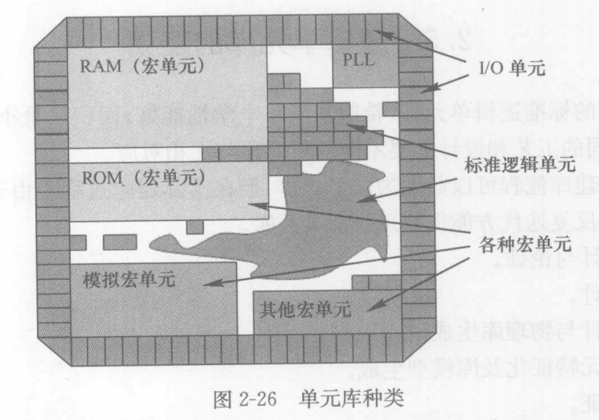

逻辑单元类别¶
- 标准的单元库是由不同的功能电路组成的，根据其芯片中应用场景可以分为三类：
标准单元（standard cell）:放置于芯片的核心区域以实现逻辑功能的粘接（glue logic）
宏单元（macro cell）：更为准确一点，称为 memorys and custom libraries，放置于芯片的核心区域，（至少）包括RAM、ROM、IP、COT、时钟PLL、DSP等宏单元
输入输出单元（I/O pad cell）：放置于芯片核心区域的周围，用于芯片信号的输入、输出、电源供给

标准单元¶
宏单元¶
I/O单元¶
- 输出输入单元（I/O Pad Cell）包括：
power I/O Pad Cell：电源单元
ground I/O Pad Cell：接地单元
signal I/O Pad Cell：输入信号、输出信号、三态、双向单元
注解
对于输入信号单元，最重要的是要考虑静电放电 ESD (electrostatic discharge) 的防护